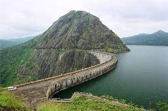

Districts
Kasaragod is a swaying beauty in Kerala's tourism map. Lying at the northern tip of Kerala bounded by the Western ghats in the east and Arabian sea in the west.
Read More
Kannur
Kannur located on the Malabar Coast of Kerala is a beautiful city bundled with beaches, monuments, ancient temples and picnic spots.
Read More
Wayanad
Wayanad cradled in the lap of the Western Ghats, truly deserves a top rank in the list of places to visit in Kerala.
Read More
Malappuram
Malappuram is bounded by the Nilgiris hills on the East and the Arabian Sea on the west, is remarkable for its unique natural beauty.
Read More
Palakkad
Palakkad or the 'Gateway to Kerala' is truly a paradise for the nature lovers.
Read More
Kozhikode
Kozhikode used to be a romantic location with the charm of centuries-old streets and the smell of local sweets in the air.
Read More
Thrissur
Thrissur is the cultural capital of Kerala. It's known for sacred sites and colorful festivals.
Read MoreErnakulam
Ernakulam is a booming business metropolis. It is often referred to as the commercial capital of Kerala. Ernakulam has been a part of human settlements since the Stone Age.
Read More
Alappuzha
The district is best known for its picturesque backwaters, by which it is well connected to other parts of Kerala. The district is also known for its coir factories.
Read More
Kottayam
Kottayam, renowned as the "Aksharanagari" or Land of Letters, flanked by the Western Ghats on the east and the Vembanad Lake and paddy fields of Kuttanad on the west
Read More

Idukki
Idukki district is a densely forested, mountainous region in the south Indian state of Kerala.
Read MorePathanamthitta
Pathanamthitta district is known as the 'Headquarters of Pilgrimage Tourism'. There are numerous churches, temples and mosques built in close proximity.
Read MoreKollam
The city of Kollam is a microcosm of Kerala state and its residents belong to varied religious, ethnic and linguistic groups.
Read More
Thiruvanathapuram
Thiruvananthapuram is the capital of the state of Kerala. It is also home to India's first IT park, Technopark, which was established in 1995.
Read More